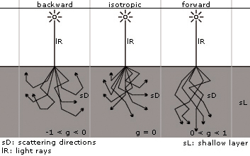

Optical Properties
The optical properties controlling the subsurface scattering
shader are surface color, transmission color, refractive index,
scattering and absorption coefficients, and the scattering
function:
- material
- provides the material shader which determines
the appearance of the material and the shading model to apply at
a surface level.
- transmission
- is the transmission color or texture
shader that filters light as it enters the object.
- ior
- is the index of refraction of the material, which
determines how light changes direction as it enters or leaves the
material.
- absorption_coeff
- is a measure of light attenuation as
it passes through a turbid medium. Usually expressed in units of
inverse length such that the product of the absorption
coefficient and path length of a photon's travel through the
medium is dimensionless. The probability of transmission
is e-aL where
a is the absorption coefficient and
L is the path length. When using
a coefficient that has been experimentally obtained, it is important
to specify a correct scale conversion ratio between coefficient units
and world units. Absorption is wavelength dependent.
- scattering_coeff
- is a measure of light scattering as
it passes through a volume. This is usually expressed in units
of inverse length so that the product of the scattering coefficient
and path length of a photon's travel through the volume is dimensionless.
The probability of transmission without redirection is
e-sL where s
is the scattering coefficient and L is
the path length. When using a coefficient that has been experimentally
obtained, it is important to specify a correct scale conversion
ratio between the coefficient units and the world units.
Scattering is wavelength dependent.
-
The table below gives suggested scattering and absorption
coefficients (based on empirical data) for several materials.
| Material | Scattering_coeff | Absorption_coeff | ior |
| Jade | 0.657 0.786 0.9 | 0.00053, 0.00123, 0.00213 | 1.3 |
| Ketchup | 0.18 0.07 0.03 | 0.061 0.97 1.45 | 1.3 |
| Marble | 2.19 2.62 3.00 | 0.0021 0.0041 0.0071 | 1.55 |
| Skim milk | 0.70 1.22 1.90 | 0.0014 0.0025 0.0142 | 1.3 |
| Whole milk | 2.55 3.21 3.77 | 0.0011 0.0024 0.014 | 1.3 |
- scale_conversion
- is a transform between the world
coordinate system and the units used to represent the scattering
and absorption coefficients. For example, if the world coordinate
system is expressed in inches and the coefficients are in
millimeters, then the correct scale factor is 25.4 (mm/inch).
- scattering_anisotropy
- is a measure of the degree of
scattering. Specifically, it is the average dot product between
the incident light direction and the scattered light direction.
Most turbid materials do not scatter light uniformly. Values may
range from -1 to 1. Where -1 corresponds to back scatter only and
1 corresponds to forward scatter only. The value 0 indicates
uniform scattering in all directions.
The following simplified diagram traces the role of the
scattering function:

Schematic display of different values of g
Copyright (©) 1986-2009 by
mental images GmbH